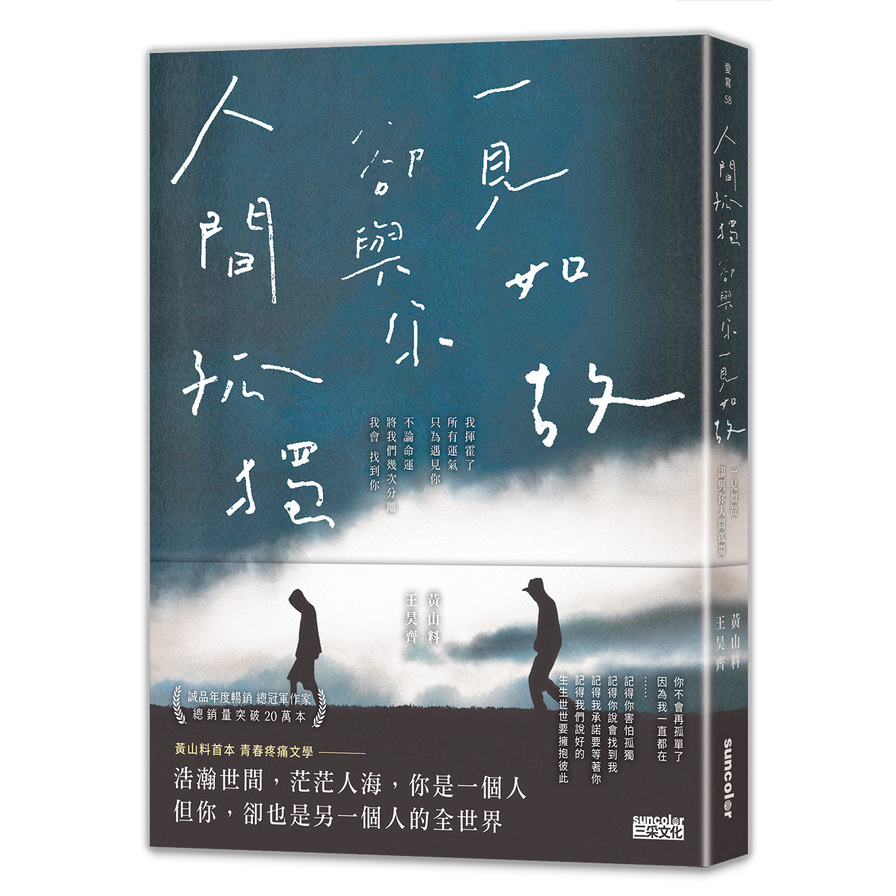

好書抽籤


中央站：失去過往與未來，拋棄時間與空間的無家者
出版社: 天下文化
書籍簡介:
作者介紹了很多有趣的經典行為實驗，披露思考的捷徑、替代、偏好、框架、錨點等效應。不僅讓我們對大腦的複雜與非理性恍然大悟，也指出我們在什麼情況下該相信靈光乍現，什麼時候該三思而行，該運用哪些技巧來避免常常使我們陷入麻煩的思考偏誤，以及如何在商場、職場和個人生活中做出更好的選擇。

出版社: 天下文化
書籍簡介:
作者介紹了很多有趣的經典行為實驗，披露思考的捷徑、替代、偏好、框架、錨點等效應。不僅讓我們對大腦的複雜與非理性恍然大悟，也指出我們在什麼情況下該相信靈光乍現，什麼時候該三思而行，該運用哪些技巧來避免常常使我們陷入麻煩的思考偏誤，以及如何在商場、職場和個人生活中做出更好的選擇。